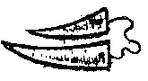
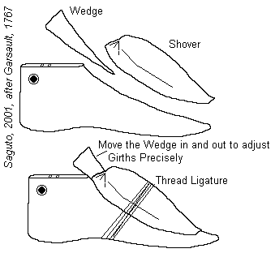
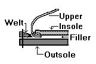
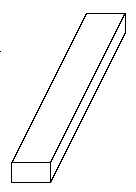

Glossary of Footwear Terminology, W-Z
Waist (Shank)
- The narrow part of a shoe sole or insole under the arch of the foot. (See also
Shank)[Thornton/Swann, 1983][Webber, 1989]
- The narrow middle part of the last, the shoe or the sole, corresponding with the instep
and the arch of the foot. [Goubitz, 2001]
- See Girths
Walled Toe
A shoe forepart which rises vertically from the sole margin and then turns sharply across
to the opposite side; often found in conjunction with an apron front (q.v.).
[Thornton/Swann, 1983]
Wax
When used this may refer to beeswax, or else it may refer to code.
See Shoemaker's Wax and Code
Waxed End (Tatched End)
The waxed end of the thread to which the Bristle is attached [Frommer]Wedge
A piece of leather thinned out to form a long triangular profile, inserted between
sole layers or heel lifts. [Goubitz, 2001]
Wedge heel
A heel extending under the waist of the shoe to the forepart. [Thornton/Swann,
1983][Goubitz, 2001]
Wedges
These objects, sometimes more specifically referred to as a Greater Wedge and a
Lesser Wedge, are used with instep leathers, shovers and a comb last are used
to precisely adjust the girths. By inserting them under the shover. or instep
leather the girth can be increased. When the wedge is removed, the shover can
then be removed, and then the last is removed.
These objects, referred to by Deloney are used with
Shovers and a Comb Last are used to precisely adjust the Girths. When the wedge is
removed, the shover can be removed, and then the last removed. Holme shows these as:


Welt
(Other medieval spellings include: Waltys, Waltt, Walte Latin:
Intercucium, Intercutium,)
A welt is a strip of leather used in shoemaking. Initially, it was used in
single soled shoes to protect the thread, and to extend the useable sole out
past the inseam. This is incorrectly referred to by Archaeologists as a rand
(See Rand). In the mid 15th century, outer soles were being
sewn to the Welt, and by the end of the 15th century, the position of
the Welt had moved in the seam from between the overleather and sole, to outside
the overleather so that the shoe could better be made right side out and still
allow an outer sole to be attached.
There are three terms that cover essentially the same piece of a shoe that are used in
different contexts. The definitions for The Bead, the Rand and the
Welt should be examined carefully.
- The term Welt appears in a shoe context by 1425 and was
probably used to refer to what Archaeologists now call the Rand (1). The term
derives from OE W�lt, and refers to the sinew part of the thigh [MED]
- For shoes made between about 1450 and about 1500, this term is used by Archaeologists
and Curators for the flat welt sewn between the upper and the sole during Inseaming,
which, after the shoe is turned, is wide enough to stitch an on Outer Sole (see Turn-Welt).
The Medieval Latin term for this is Intercucium (v. intercuciare)[OED2, Oxford
Latin Dictionary, Cassells Latin, Du Cange, Dictionary of Medieval Latin
from British Sources, Lathams revised medieval word list, John of Garland, Dictionarius].
Thomas Wright, in his commentary on Garland refers to Rives and Waltys.
- After about 1480, this refers to a narrow strip of leather placed outside the upper on a
non-turned shoe [not inserted between like above with a turnshoe] and sewn simultaneously
around the lasting margin (q.v.) of the upper during Inseaming [q.v.] joining it to the
insole edge or to a "rib"(see "holdfast") raised on the flesh side of
the insole near the edge. The sole is then stitched to this welt by a second seam. (see
Welted Construction) [Thornton/Swann, 1983]. It is sometimes referred to as a
"Rand"(2), when folded under after sewing, presenting a rolled edge. This
continues into modern shoemaking where the welt refers to the strip that begins
approximately at the heel-breast on one side and continues around the forepart, ending
approximately at heel-breast on the other, and should not be confused with the Rand, the
strip around the heel.
- About the time of the transition between definitions 2 & 3, the Medieval Latin term
appears to change to Intercutius (v. Intercutiare) although it is not known why the change
in spelling occurs [OED2, Oxford Latin Dictionary, Cassells Latin, Du
Cange, Dictionary of Medieval Latin from British Sources, Lathams revised
medieval word list]. OED2 also seems to refer to the Welt as "Oureleure".
- A narrow strip of material inserted in seams, as in shoe uppers for reinforcement, later
termed a "bead" or "bead-welt" [q.v.]
- A Bead Welt (see Bead (2))
- On some late 20th century shoes, there are mock (or false) welts, which give the
impression of a welt.
- This strip of leather, an average of 24 inches (60 cm) long, four-fifths of an inch (2
em) wide, and one-eighth of an inch (3 mm) thick, is the foundation of the shoe. It holds
the upper, insole, and sole together. [Vass]
- A strip of leather sewn along the outside of the upper's bottom edge together with the
insole during inseaming, to which later the treadsole (outsole) is stitched. [Goubitz,
2001]
Welt, Closing
See Welt (5). [Devlin, 1840]Welt, Making
See Welt. [Devlin, 1840]
Welt needles
Curved needles just over 3 inches long (8 cm). Two of them are needed for the
welt-stitching process. [Vass]Welt seam
The seam that holds the upper, insole, and welt together. [Vass]
Welt stitch
Used to stitch the treadsole (outsole) on; it goes straight through welt and sole, often
lying concealed in a groove or channel on the tread side of the sole. [Goubitz, 2001]
Welt-stitched shoe
An elegant, handmade shoe. The welt seam that holds the upper and the insole together
is not externally visible. The top-sole seam, which is visible, holds together the welt
and the top sole (in a single-soled shoe); or the welt, the middle sole, and the top sole
(in double-soled shoes). [Vass]
Welted Construction
- This term is used to describe the manufacture of an unturned modern �welted�
shoe. Developed in the 15th century, this technique formed the basis
of most shoemaking well into the modern era, and, although no longer the
mainstay of shoemaking in this era of exuded plastics and molds, this method is
still preferred by traditional hand sewn shoemakers.
- This method of shoe construction appears to have been developed in Germany by around 1480
or so, and introduced to England by c.1500. These techniques formed the basis of all
shoemaking well into the modern era, and, although no longer the mainstay of shoemaking in
this era of exuded plastics and molds, this path is still followed by an impassioned
minority.
This type of construction takes place in three stages:
- The Upper is lasted, or placed on a last rightside out, and held in position temporarily
by nails or bracing thread;
- The lasted upper is sewn together with a welt (q.v.) to the edge of the insole (early
examples use the actual edge itself with an edge/flesh seam (q.v.) but later ones use an
upstanding rib, or Holdfast, set in a short distance from the edge);
- The sole is then stitched to this welt. [Thornton/Swann, 1983]

Wet
(or Wetted)
This refers to soaking leather in water to make it pliable. [Devlin. 1840]Wheston
(also Whetstone Oilstones, honing stones, and sharpening stones. Latin:
Acuperium, Cos)
These do not appear in the any of the medieval literature, but they do appear in
illustrations of shoemakers, and are very important to keeping knives, shears,
and awls sharp.
Used to keep awls, shears and knives sharp. They are also known as oilstones, honing
stones, and sharpening stones. Although these do not
(at this time) to have been mentioned in the Medieval literature, these appear in several
of the drawings

- Use a light lubricating oil, or water. Other forms of oil may have drawbacks for the
unwary. Water produces a keener cut on the stone, as does oil mixed with paraffin. It
should be noted that some stones require water, and oil will ruin them. Check any
instructions your stone might come with.
- Don't be stingy with the oil, since it is not meant as a lubricant, but serves to keep
the pits in the stone from becoming impregnated with metal as you sharpen. This is what
forms the grime black slurry that forms as you sharpen, and what must be wiped away before
it can clog the stone.
- Notice the bevel your blade forms, and try to keep this angle. You can get a sense of
the bevel by lying the edge of the blade on the stone.
- Sharpen in smooth, firm strokes, as though you were trying to take a slice from the
stone with each stroke, or else move the blade in firm, circular strokes (opinions vary).
Often only a single pass with a stone is enough to produce a clean edge that can be
resharpened by stropping.
- Keep doing this until you can't feel a burr and your knife cuts smoothly again.
- Be patient.
- After using a stone, you should probably finish with a final stropping.
Whip
(also Overcast Stitch, Whip Stitch, Whipping Modern terms include:
Binding Stitch)
This is a type of sewing stitch used for binding seams, attaching linings and
edging, cording, and patching. It was usually sewn with a split hold, that is,
the needle or bristle and thread are passed partly through the leather, so that
the stitch doesn�t appear on the outside of work; working around the edge of the
applied piece, with an overcast stitch creating a series of angled holes and
marks on the leather. Sometimes the whipping will stab through the lining or
even through the body of the work. The term to whip, as in making an overcast
stitch appears from the 16th century. The term whip stitch appears
in the 17th century.
- A kind of stitch used to hem. [Devlin, 1840]
- A seam sewn with a split hold on interior linings that don't show stitches to the
outside of the work. [Saguto]
- A seam sewn with a stabbing stitch around the edge of a piece of leather. [Saguto]
- Whip stitch The overcast stitch used to sew on reinforcement pieces, edge
bindings, and stand leathers. [Goubitz, 2001]
White Tawyer
(Other medieval spellings include: White-Tawer, Whittawer)
Someone who makes tawed leather, or prepares white leather.
Width numbering
This system has 5 to 8 girth measurements. Given the shoe size and width number, the girth
at the metatarsals, instep, heel, and ankle can be calculated. [Vass]
Wing cap
Heart-shaped toe cap. The elegant line extends along the vamp almost as far as the heel.
[Vass]
Winged Box
Found in modern pointed shoes this describes a toe box with extra long stiff
sides.[http://www.curtin.edu.au/curtin/dept/physio/podiatry/shoeglos/content.html]Winter Shoes
This term refers to a specific, non-ecclesiastical shoe with a cork filled
sole. There are a very few examples of these from the 14th and 15th
centuries.
Wooden heel
A heel core made of wood and covered with leather or textile. [Goubitz, 2001]
Wrap-round Upper
(also One Piece Upper)
A single piece overleather for a shoe or boot. These are very common in
medieval footwear.
- An upper, either all in one piece or a small insert (usually triangular) where required,
in which the outside vamp wing (q.v.) continues backwards to become the outside quarter
(q.v.) and then passes round the back of the foot to become the inside quarter; it then
joins the inside vamp wing with a vertical or sloping seam. This is a typical feature of
Medieval footwear. [Thornton/Swann, 1983]
- One-piece upper A shoe upper consisting of a single piece of leather. [Goubitz, 2001]
Yerk
This refers to drawing your stitches tight, or to bind tightly.
Return to Contents or [Next]
Footwear of the Middle Ages - Glossary of Footwear Terminology W-Z,
Copyright � 1999, 2000, 2001, 2005 I. Marc Carlson.
This page is given for the free exchange of information, provided the author's name is
included in all future revisions, and no money change hands, other than as expressed in
the Copyright Page.